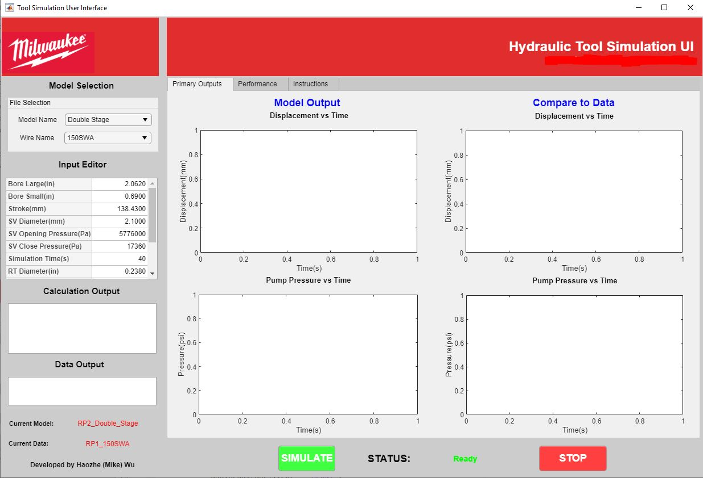
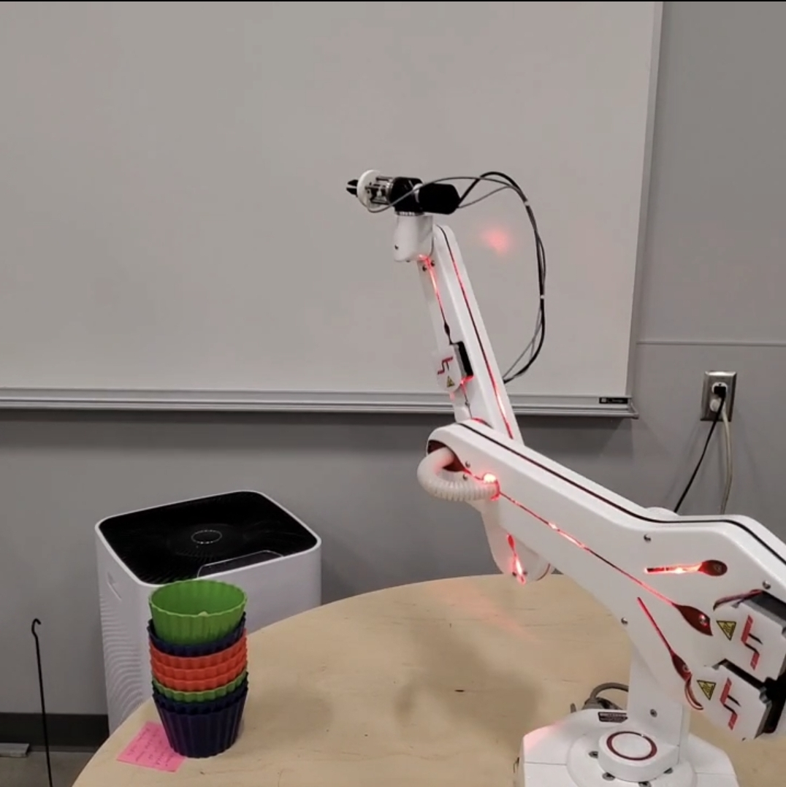
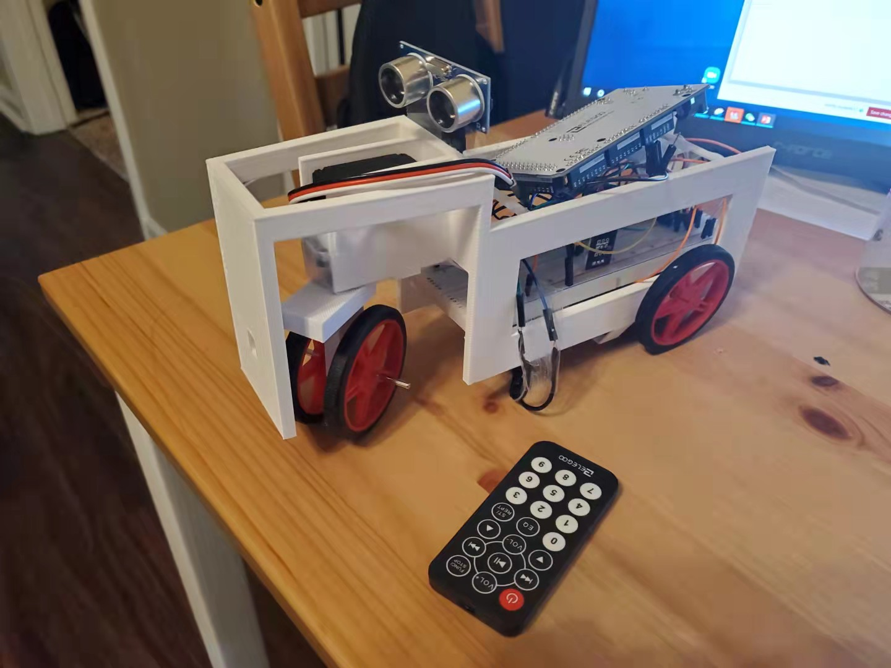

Portfolio
-
Hydraulic Tool Simscape Model Development
Contructed Multiple Simscape models for an unreleased hydraulic pressing tool at Milwaukee Tools. The models can virtually the actual outputs of the tool in seconds. Implemented Object Oriented Programming and designed an user-friendly interface to allow people from any background to use the model.
-
Robot Arm Control
Determined the forward and inverse kinematics of a 6 degree-of-freedom robot arm using MATLAB. Derived all the singularities of the given robot and desmonstrated with built-in software. Designed decentralized PD controllers for the robot.
-
Robot Tank Server & GUI

Programmed and designed web servers with Node, Python SSH, MQTT, and Firestore to achieve live communications among the tank, PC, and Raspberry Pi. Designed a customized GUI programs that controls the tank using MATLAB App Designer and Kivy. Implemented forward and inverse kinematics along with solid modeling to achieve synchronized movements of the tank both in the MATLAB GUI and reality
-
Remote Controlled Kart with Obstacle Bypass System
Modeled the chassis and designed the layout of all the components after detailed measurements of the selected parts. 3D Printed the chassis and assembled all the parts including DC motors, servo motors, shafts, wheels, and microcontroller. Compiled the microcontroller with Arduino and implemented IR remote to control the movement of the kart. Enabled obstacle detection and bypass with an ultrasonic sensor